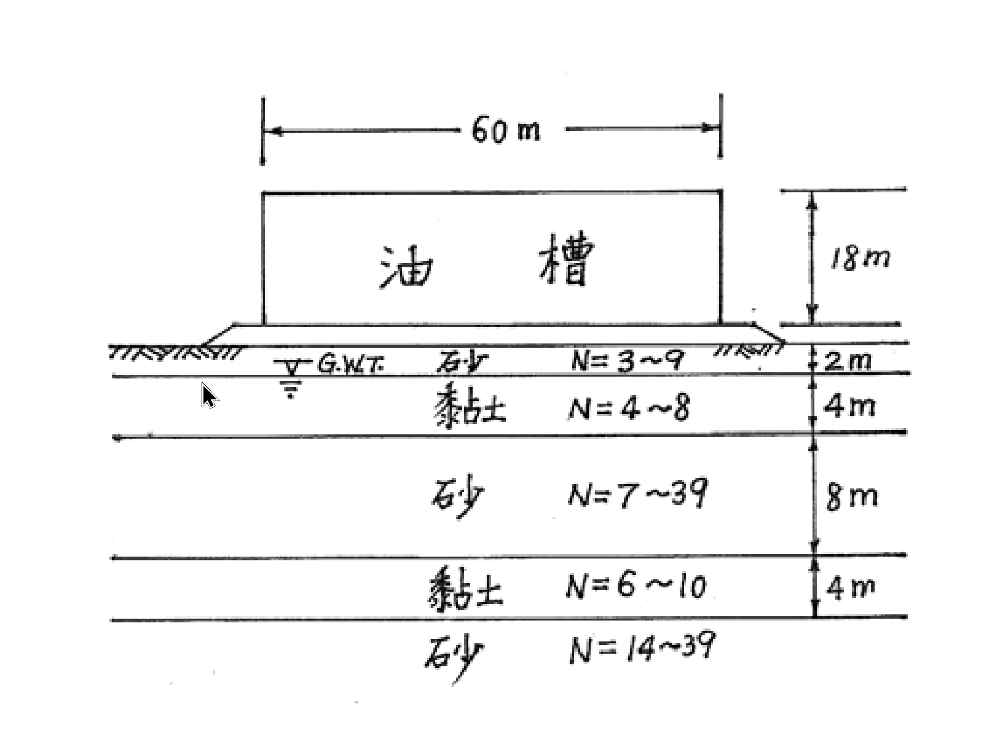

考題編號：SM-2004-4
主分類： SM-U2 基礎設計與地盤改良
副分類： SM-U2-4 基礎型式之選擇與評估
分析法： 概念題
標籤： 儲油槽設計 大地工程問題 工址調查 預壓工法 現地監測
1. 原始題目重述 (Problem Restatement)
於台灣某處建造如下圖之大型儲油槽，油槽下方為軟弱且具壓縮性之軟弱黏土及砂土層。
(一) 試詳細說明油槽設計者必須考慮之各項大地工程問題。（9 分）
(二) 工址調查應進行那些現地調查及實驗室試驗項目？為甚麼需要這些項目？（8 分）
(三) 若採用預壓（preloading）工法改良地盤，為確保施工安全及瞭解改良成效，在現地應進行那些監測項目？（8 分）

圖說：地表建造一直徑 60m、高 18m 之大型儲油槽。地下水位位於地表下 2m 處。土層由上而下分別為：0~2m 為砂土 (N=3~9)，2~6m 為黏土 (N=4~8)，6~14m 為砂土 (N=7~39)，14~18m 為黏土 (N=6~10)，18m 以下為砂土 (N=14~39)。
2. 考題核心精神與出題者意圖 (Core Concepts & Examiner's Intent)
- 本題為典型之大型儲油槽基礎設計與地盤改良綜合概念題。
- 測驗考生對於「大面積柔性載重」於「互層軟弱地盤」上所引發的各類大地工程問題（承載力、沉陷、液化等）之整體評估能力。
- 測驗對於工址調查（現地與室內試驗）如何針對特定工程問題獲取所需參數的對應關係。
- 測驗預壓工法（地盤改良）的施工監測儀器配置，評估考生是否具備將理論落實於實務安全及成效管控之能力。
3. 解題戰略地圖與陷阱分析 (Strategic Roadmap & Trap Analysis)
- 戰略一（大地問題）：從載重特性（大面積、重載）與地層特性（軟黏土、地下水位高、砂土層可能疏鬆）出發。油槽載重極大，首要考量承載力（尤其局部破壞或基礎邊緣剪力破壞）；此外，下方有兩層黏土，長期壓密沉陷量必然驚人，且差異沉陷會導致油槽本體或管線破壞；位於台灣且有飽和砂土（0-2m部分未飽和，但2m以下有砂土層N=7~39，淺層N值偏低）則需檢核地震液化潛能。
- 戰略二（工址調查）：需對應第一點的大地問題。要算承載力/沉陷/液化，分別需要什麼參數？
- 現地：標準貫入試驗(SPT)、圓錐貫入試驗(CPT)、十字鑽管試驗(Vane shear，針對軟黏土)、地下水位觀測。
- 室內：物理性質（阿太堡限度、比重、單位重）、力學性質（一維壓密試驗求 $C_c, C_v$、三軸試驗求 $c, \phi$、單軸壓縮試驗求 $S_u$）。
- 戰略三（預壓監測）：預壓會產生巨大超載，首要防止施工期間地盤剪力破壞（側向擠壓）及掌握壓密進度（何時可移除預壓載重）。對應儀器為：水壓計（孔隙水壓消散）、沉陷板/地表沉陷點（垂直變形）、傾斜管（側向變形）、隆起標（周圍地表隆起）。
- 陷阱分析：
- 忽視台灣為地震帶的特性，未提到砂土液化問題。
- 籠統列舉試驗，未明確指出「為什麼需要」（對應何種設計參數）。
- 預壓監測未區分「安全」（側向位移、隆起）與「成效」（沉陷量、孔壓消散）。
3.5 變數層次分析 (Variable Hierarchy Analysis)
最終目標
針對大型儲油槽於軟弱互層地盤之基礎設計，提出設計考量、調查計畫與預壓監測方案
本題關鍵公式（依計算順序）
- 本題為概念申論題，無特定計算步驟。但在思考上需緊扣下列公式之物理意義：
- 沉陷量：$S = \frac{C_c H}{1+e_0} \log \frac{\sigma_0' + \Delta \sigma}{\sigma_0'}$
- 壓密度與時間：$T_v = \frac{C_v t}{H_{dr}^2}$
- 極限承載力：$q_u = c N_c + q N_q + \frac{1}{2}\gamma B N_\gamma$
- 有效應力：$\sigma' = \sigma - u$
L1：題目直接給定
- 欄位：符號 ∣ 數值 ∣ 說明
- $B$ ∣ 60m ∣ 儲油槽直徑
- $H_{tank}$ ∣ 18m ∣ 儲油槽高度
- $G.W.T$ ∣ GL-2m ∣ 地下水位深度
- $N$ ∣ 各層不等 ∣ 標準貫入試驗N值，顯示淺層砂土及黏土偏軟弱
L2：需知識點推導
- 設計考量評估
- 欄位：符號 ∣ 公式／來源 ∣ 卡關?
- 總載重 ∣ $q \approx \gamma_{oil} \times H_{tank}$ ∣
- 壓密沉陷 ∣ 主要受厚度 $H$ 為 4m 的兩層黏土控制 ∣
- 承載力破壞 ∣ 邊緣剪力破壞或深層圓弧滑動 ∣
L3：深層知識（不懂就卡住）
- 欄位：知識點 ∣ 說明 ∣ 卡關?
- 柔性基礎特性 ∣ 油槽底板為柔性，會產生碟形沉陷，中央沉陷大於邊緣，引發差異沉陷。 ∣
- 預壓工法機制 ∣ 預先施加載重促使黏土層壓密，增加有效應力與抗剪強度，消除未來沉陷。 ∣
- 監測儀器配置 ∣ 孔壓計看壓密進度；傾斜管防側向破壞；沉陷板看沉陷量。 ∣
4. 步驟化詳細計算過程 (Step-by-Step Detailed Calculation)
(一) 油槽設計者必須考慮之各項大地工程問題
- 沉陷問題（Settlement）：
- 總沉陷量過大：油槽載重極大（若滿載 18m 高之油，超載約達 150~180 kPa），下方存在兩層黏土層（厚度各為 4m，N值偏低），將產生極大的長期壓密沉陷量。
- 差異沉陷（Differential Settlement）：油槽屬柔性基礎，受載後中央沉陷量會大於邊緣，形成碟形沉陷；且地層可能存在橫向不均勻性，可能造成油槽傾斜，導致槽壁應力集中、底板破裂或連接管線扯斷。 - 承載力與穩定性問題（Bearing Capacity & Stability）：
- 淺層剪力破壞：儲油槽滿載時，需檢核軟弱黏土層與鬆砂層是否足以提供足夠的極限承載力，避免發生基礎剪力破壞。
- 深層整體滑動（Base Shear / Edge Failure）：由於基礎寬度達 60m，影響深度極深，需考量發生深層圓弧滑動破壞之可能性（特別是在快速加水試壓或滿載的短期不排水狀態）。 - 地震與液化問題（Liquefaction）：
- 台灣位處高震區，地下水位（G.W.T）位於地表下 2m，下方存在飽和的砂土層。特別是 6~14m 之砂土層，部分 N 值僅為 7，且位於易液化深度範圍內，地震時可能發生土壤液化，導致油槽不均勻沉陷或喪失承載力。 - 施工期問題（Construction phase issues）：
- 若進行地盤改良（如填土預壓），施加超載時可能因加載過快導致軟黏土層來不及排水（不排水剪力強度不足），引發地盤側向擠壓與基礎破壞。
(二) 工址調查應進行之現地調查及實驗室試驗項目與原因
為了量化上述問題並進行設計，需進行下列調查與試驗：
1. 現地調查項目：
- 鑽探與標準貫入試驗（Boring & SPT）：獲取土層分層剖面，取得 N 值以初步評估砂土相對密度、黏土軟硬度及液化潛能。
- 薄壁管採樣（Shelby Tube Sampling）：在黏土層取得未擾動土樣，供室內壓密與強度試驗使用（極為關鍵）。
- 圓錐貫入試驗（CPT / CPTU）：連續記錄地層阻力與孔隙水壓，以精確判定地層分界、土壤動態與靜態參數，並輔助液化評估。
- 十字鑽管剪力試驗（Vane Shear Test）：於軟弱黏土層直接量測其未擾動與擾動後之原狀不排水剪力強度（$S_u$）及靈敏度（$S_t$）。
- 地下水位觀測（水壓計安裝）：確認長期穩定之地下水位，作為有效應力計算與液化分析之基準。
2. 實驗室試驗項目：
- 物理性質試驗（含水量、單位重、比重、阿太堡限度、粒徑分析）：用於土壤分類（USCS），並建立基本物理量關係，輔助液化判定（如細顆粒含量 FC）與經驗公式估算。
- 一維壓密試驗（1D Consolidation Test）：極為重要。求取壓縮指數（$C_c$）、回脹指數（$C_r$）、先期壓密壓力（$P_c'$）及壓密係數（$C_v$），用以計算黏土層之總壓密沉陷量與沉陷速率。
- 三軸壓縮試驗（Triaxial Test）：
- UU 試驗：求取不排水剪力強度（$c_u$），用於分析短期（施工期、快速滿載）之承載力與整體穩定性。
- CU 試驗（量測孔壓）：求取有效應力強度參數（$c', \phi'$），用於長期穩定分析。
- 共振柱試驗或動態三軸試驗（視需要）：若需進行進階之地震反應分析或精細液化潛能評估時，獲取土壤之動態剪力模數（$G$）與阻尼比（$D$）。
(三) 預壓工法之現地監測項目
預壓（Preloading）工法是在建槽前先堆置土方，讓軟黏土層提早發生壓密沉陷，待沉陷穩定、強度增加後再卸載建槽。為確保施工安全（防剪力破壞）與瞭解改良成效（沉陷進度），需安裝以下儀器：
- 沉陷板（Settlement Plates）與地表沉陷標釘：
- 目的：量測地表隨時間的沉陷量。
- 成效評估：繪製沉陷-時間曲線（S-t curve），配合 Asaoka 法或雙曲線法推估最終沉陷量，以決定何時達到預定壓密度並可移除預壓載重。 - 多點式地中沉陷計（Multi-point Extensometers / Sondex）：
- 目的：量測不同深度土層之沉陷量。
- 成效評估：確認 2~6m 及 14~18m 兩層黏土各自的壓密變形貢獻量。 - 水壓計 / 壓阻式孔隙水壓計（Piezometers）：
- 目的：埋設於黏土層中，量測超載引發之超額孔隙水壓（$\Delta u$）及其隨時間之消散情形。
- 成效與安全評估：孔壓消散程度代表壓密度（$U = 1 - \frac{\Delta u}{\Delta u_i}$）；若加載階段孔壓上升過快逼近破壞臨界值，則必須暫停加載以防破壞。 - 傾斜管（Inclinometers）：
- 目的：安裝於預壓區邊緣之土層中，量測土層之水平側向位移量與位移深度。
- 安全評估：嚴密監控側向擠壓情況。若側向位移速率突增，為地盤即將發生剪力滑動破壞之先兆，必須立即停止加載甚至局部卸載。 - 隆起標（Heave Stakes）：
- 目的：打設於預壓載重區外圍。
- 安全評估：監測周圍地表是否有異常隆起現象。若發生明顯隆起，表示下方軟土正發生側向擠出（基礎可能發生塑性流動破壞）。
5. 關鍵爭議點與進階探討 (Critical Issues & Advanced Discussion)
- 液化問題的不可忽略性：雖然題目強調「軟弱且具壓縮性之黏土」，但對於厚達 8m 且 N 值部分僅 7 的中段砂土層（位於地下水位下），在台灣絕對必須提出液化潛能檢核。若僅回答黏土壓密沉陷，將失去部分分數。
- 預壓工法的時效問題：黏土層壓密需時甚久（由 $T_v = C_v t / H_{dr}^2$ 決定）。厚度 4m 的黏土層若單面排水，壓密時間可能長達數月至數年。實務上，為加速預壓成效，通常會搭配垂直排水帶（PVD，如塑膠排水板或砂井）以縮短排水路徑徑向排水。若在答題中能補充「建議配合設置垂直排水帶加速壓密」，會是極佳的加分項。
- 儲油槽水壓測試（Water Test）：完工後正式營運前，通常會先注入水進行水壓測試。這本身就是一種「預壓」與「檢驗」過程，需依設計階段性加水並配合嚴格監測，確認沉陷量在容許範圍內後才可投入營運。